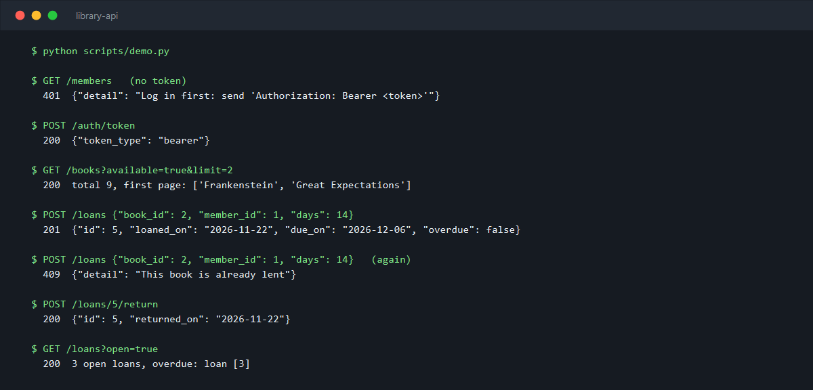
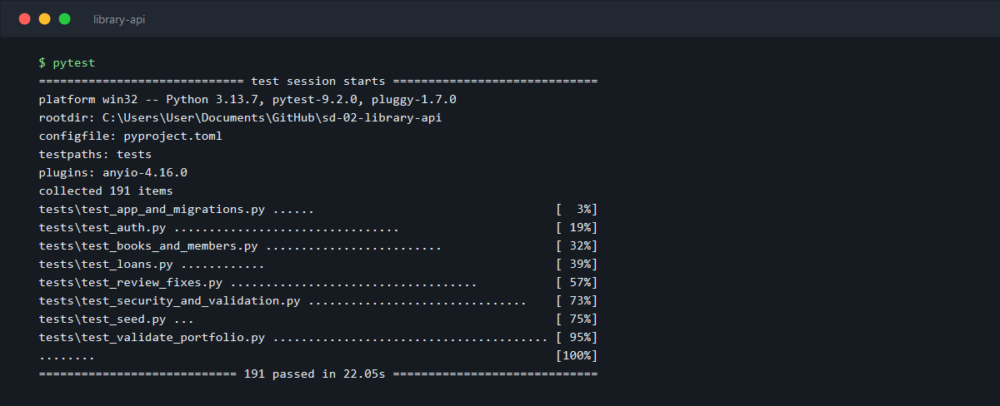

Library REST API with Database
A REST API for a small library: books, members and loans in PostgreSQL, with validation, paging, token login and an OpenAPI page.
Complete
Problem
A small library needs to keep its catalogue, its members and its loans in one place, and other programs need to reach that data safely. The aim of this project was a small but complete REST API with a real relational database behind it. Its rules must hold even when two requests arrive at the same moment: a book cannot be lent twice, and a book or member with loans cannot be deleted.
Approach
- Schema first. Four tables: books, members, loans and librarians. The rules that must never break live in PostgreSQL: unique ISBNs and emails, foreign keys that block deleting a book or member with loans, check constraints on the dates, and a partial unique index that allows only one open loan per book.
- Resources and status codes. One module per resource. Lists are paged and searchable. Answers use 401, 404, 409 and 422, each with a message that names the problem.
- Validation at the edge. ISBNs are checked by their check digit and stored as 13 digits, emails are stored in lower case, and unknown fields are refused.
- Login. Passwords are stored as salted scrypt hashes. A login returns a signed token (JWT) that expires after 30 minutes. Reading books is public; everything else needs the token.
- One command to run. Docker Compose starts PostgreSQL and the API, and the API applies the migrations itself before it starts.
Execution instructions
There is no live demo. The API runs on your own machine with Docker, in the cloned project folder:
cp .env.example .env # Windows: copy .env.example .env
docker compose up --build
In a second terminal, add the demo data (a librarian, 12 books, 4 members and 4 loans):
docker compose exec api python scripts/seed.py
Then open http://localhost:8000/docs, press Authorize, and log in with DEMO_USERNAME and DEMO_PASSWORD from .env. Every endpoint can be tried from that page.
.env holds values for a local run only. Replace the passwords and JWT_SECRET before any other use. To stop, press Ctrl+C; docker compose down --volumes also deletes the data.
Tech stack
- Python 3.12+ with FastAPI, which builds the OpenAPI page from the code, and Pydantic for validation.
- PostgreSQL 18 through SQLAlchemy, with Alembic migrations.
- PyJWT for the tokens; scrypt from the standard library for the passwords.
pytestandruff; the tests run on SQLite by default and on PostgreSQL in CI.- Docker Compose, and GitHub Actions that starts the whole stack on every push.
Challenges and solutions
- Two requests at once. A check in the code alone ("is this book already lent?") can be passed by two requests at the same moment. The database's partial unique index refuses the second loan anyway, and the API turns that refusal into the same clear 409 answer. A test writes straight to the database to prove it.
- Tests without Docker. The tests build their database with the real migrations, on a temporary SQLite file, so
pytestworks on a fresh clone. CI runs the same tests on PostgreSQL, the real database. - A database that does not answer. At first a request hung when PostgreSQL was down. A 5-second connection timeout fixed it:
/healthnow answers 503 within about 3 seconds. - Not revealing usernames. An unknown username takes as long to refuse as a wrong password, so the answer time gives nothing away.
- Found in review. Ids too large for PostgreSQL and text with a NUL character crashed requests with a 500 error, and
%in a search matched everything. Version 1.0.1 refuses such input with a clear 422 answer and searches as plain text.
Results
A session with the running API: a request without a token is refused, a book is lent, lending it again is refused with 409, and the loan is returned.

| Check | Result |
|---|---|
| Tests | 191 pass, on SQLite and on PostgreSQL 18 |
| Protected endpoints | each of the 12 refuses a missing or forged token (401) |
| Whole stack | docker compose up passes all 7 outside checks, locally and in CI |
| Database down | /health answers 503 within about 3 seconds |

What I learned
How to set up a database, create a schema, create the rules, the routing and the controllers for the REST API. There are many alternative user authentication methods; tokens are the bare minimum. Create the relationships for the database. Create a basic login role, "the librarian". Test in different scenarios whether the API is well protected.